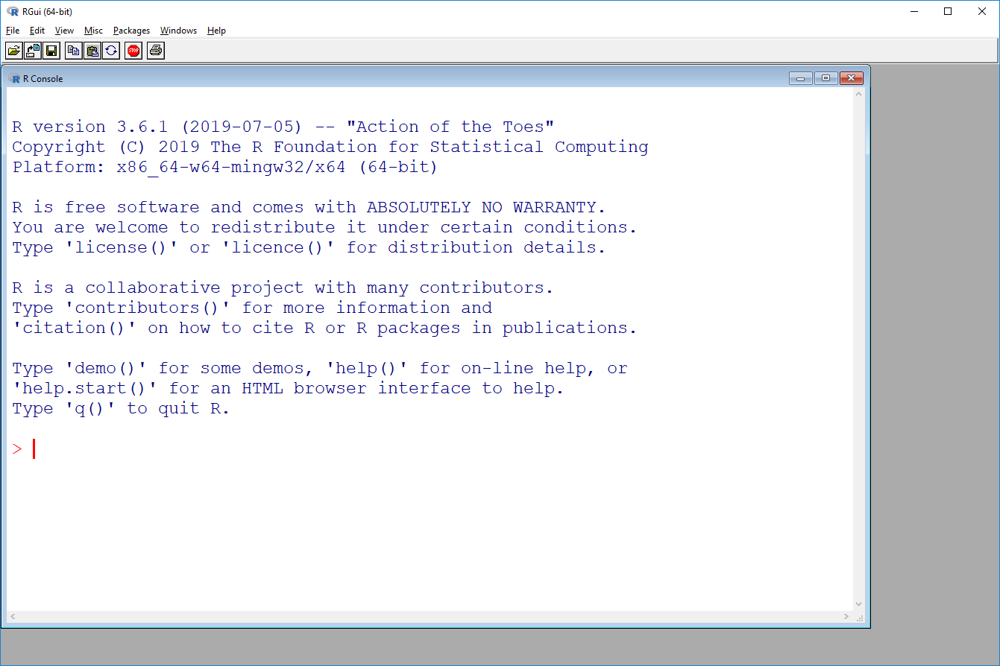
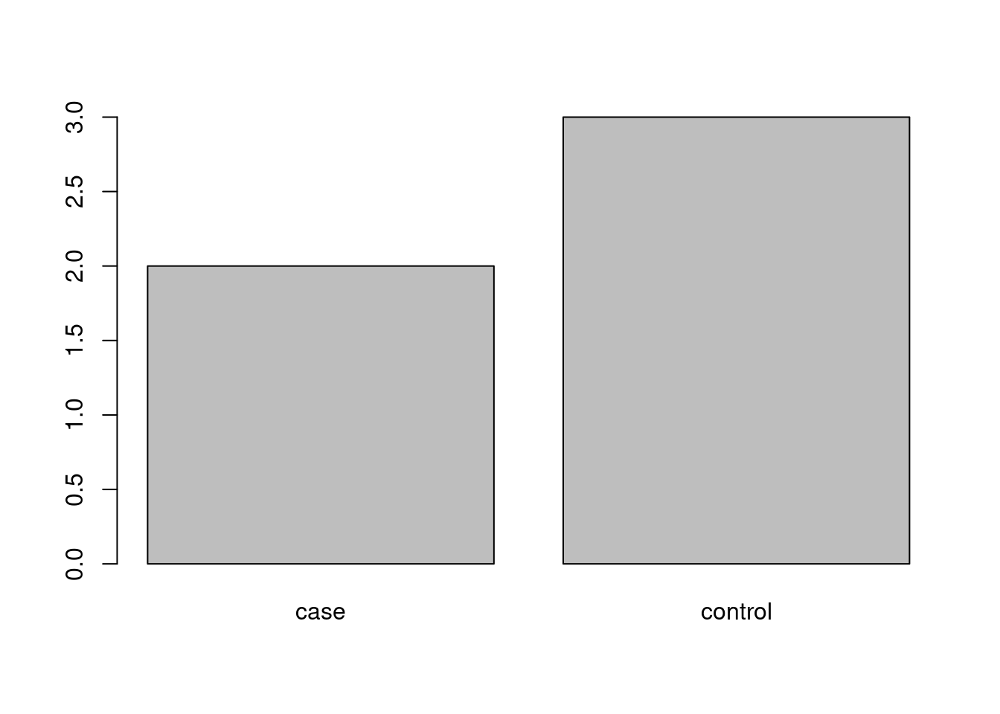
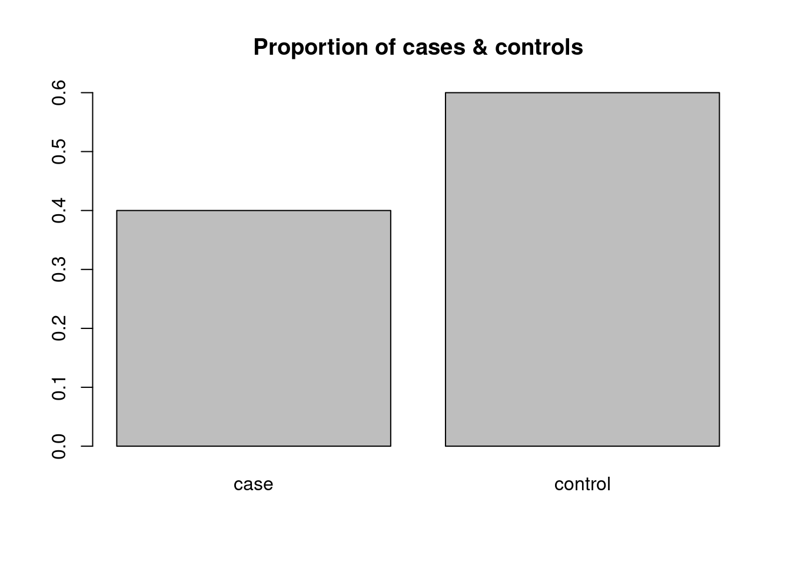

2 Working with R
2.1 Starting R
R is started like any other program, depending on the operating system (Start menu, Launchpad etc.). The resulting application window looks quite different between systems. Below we see the window for an elderly R 3.6.1 on Windows 10.

Note that the application window has a menu bar at the top - however, it only offers a limited set of entries that deal with meta-issues: running script files, changing working directories, installing and loading add-on packages and displaying help information. None of this is directly concerned with data processing or analysis, and everything offered by the menu bar can be done in the R console using the appropriate commands or key-combinations (Ctrl-V etc.)
The prominent feature however is the large sub-window that takes up most of the space of the application window. This is the R Console, currently displaying some background- and copyright information, and a cursor. The cursor is where the magic happens: you are supposed to enter the correct sequence of commands to read and manipulate data, to calculate descriptive statistics, generate plots, fit regression models etc. The console is the same for all operating system, as well as for RStudio, and this is what this introduction focuses on.
Interactive work with R happens in a steady loop:
- Type an expression or command
- Hit the Enter / Return key to start the evaluation of the expression / command
- R displays the result of the expression / output of the command
- After inspecting the results / output, continue with 1.
(In computer science, this is also known as REPL, a read-evaluate-print loop.)
Compared to a menu-driven program like SPSS or Stata, this has the obvious disadvantage that you have to know what commands to use: it is not enough to know that you want to fit a linear model, but you also have to remember that the command for linear models is lm. We have to invest the time to get reasonably familiar with at least enough R commands to (a) be somewhat productive and (b) learn more as required.
Example: Numerical calculations Numerical expressions can be directly evaluated at the command line:
> 1+1
[1] 2
> 2*7
[1] 14
> 1/7 + 3*(0.5 + 1)
[1] 4.642857
> 2^3
[1] 8From this, we can see several things:
- Commands and results are shown one after the other; there is a continuous flow of command / result / command …
- Results are pre-fixed with a
[1]; for now, this just means that only one number is displayed as output. - Basic arithmetic operations (including parenthesis) work as expected.
- R uses a decimal point (not comma).
- R uses the caret
^for exponentiation (power-operator).
Importantly, R supports easy re-use and modification of commands / expressions: at the command prompt, we can use the arrow keys up/down to move through the list of previous commands, which can be edited and re-used by simply hitting return again.
Example: Calculating with functions R implements a very wide range of mathematical functions. Some common examples:
> sqrt(16)
[1] 4
> exp(1)
[1] 2.718282
> log(10)
[1] 2.302585
> log2(16)
[1] 4
> log10(100)
[1] 2In order to apply a function, we simply type the name of the function at the command prompt, followed by the value we want to apply it to in parentheses. This value in parenthesis is referred to as the argument of the function.
Numerical functions of this type can be mixed with general numerical expressions in a completely natural and intuitive manner:
> sqrt(7+9)
[1] 4
> (2.1 + 7.4 + 3.5) / 3 + 2*sqrt(23 / 3)
[1] 9.871083
> exp(0.71 - 1.96*0.12)
[1] 1.607693Interesting fact: R does not worry about blank spaces, as long as they do not appear within names (or strings - more about that later)
> sqrt(5)
[1] 2.236068
> sqrt( 5 )
[1] 2.236068
> sqrt ( 5 )
[1] 2.2360682.2 Storing data as objects
R allows you to store values as variables or objects under a name of your choice (with some technical limitations, see below). This name can then be used in any kind of expression as a shorthand for the value; when the expression is evaluated, R will substitute the value for the name.
This definition of values is done via assignment: we write first the name of the variable, an assignment operator, and the value we want to store. Symbolically:
<name> <- <value>A simple example: we want to store a reasonable approximation for the value of \(\pi\) under the name pi for future reference in calculating circle areas and circumferences:
> pi <- 3.1415927This can be read as the command “Store the value 3.1415927 under the name pi”. Note that this command does not generate a visible return value, like our calculations above. Instead, it has a side effect, namely storing the given value under the name pi.
Typing pi at the command prompt has now the same effect as typing the number:
> 3.1415927
[1] 3.141593
> pi
[1] 3.141593We can now use pi for calculations, saving us the trouble of typing out the full number; for a circle with radius \(r=5\), we can calculate circumference and area in the usual manner:
> 2 * 5 * pi
[1] 31.41593
> 5^2 * pi
[1] 78.53982This ability gives us a lot of flexibility: we can define multiple variables and combine them in expressions, with both numbers and functions. For example:
> x <- 17.5
> x
[1] 17.5
> y <- sqrt(13)
> y
[1] 3.605551
> x + y
[1] 21.10555
> z <- x + y
> x*y + log(z)
[1] 66.14668We can always overwrite an existing variable with a new value:
> x <- 1
> x
[1] 12.2.1 About variable names
The R documentation states : “A syntactically valid name consists of letters, numbers and the dot or underline characters and starts with a letter or the dot not followed by a number.”
In practice:
- Small or large matters:
piis not the same asPi - Don’t use language-specific characters (ä, å, é etc.) for variable names.
2.3 Data structure I: The vector
All this is reasonable as long as we want to work with one observation at a time. But what if we want to calculate the mean of five numbers? We want to be able to deal with multiple observations of the same type (here: numbers) in one go: we want to store them together, calculate their mean and standard deviation with one simple function, plot them in the same figure etc.
This is where the concept of a vector comes in: this is a collection of numbers arranged in linear order, from first to last value. Conceptually, if we measure some kind of quantity, like e.g. height or weight, on a number of subjects, the measurements from first to last subject form a vector of numbers.
The key to defining a vector is the function c used to combine several data items of the same type. Example:
> c(2.57, 3.14, 3.78, 1.90, 2.45)
[1] 2.57 3.14 3.78 1.90 2.45Note that c is a function, same as sqrt or log, but it accepts any number of arguments (the numbers to be combined together). It returns a vector consisting of these arguments.
We can feed the resulting vector directly to e.g. function mean like this:
> mean( c(2.57, 3.14, 3.78, 1.90, 2.45) )
[1] 2.768Here, mean is a function that takes a vector as argument, and returns one value, the arithemtic mean of the values in the vector. However, this not the most useful way of handling data, as we still have to carry around a (potentially very long) set of values. In practice, the real power of the vector-concept is realized when we store them as an object: this gives us a useful handle (the name) for accessing and processing what is a potentially a very large amount of data.
Example:
> x <- c(2.57, 3.14, 3.78, 1.90, 2.45)
> mean(x)
[1] 2.768
> median(x)
[1] 2.57
> sd(x)
[1] 0.7169868
> range(x)
[1] 1.90 3.78Note that the functions above work as you would expect from their (abbreviated) names. They all take a vector as argument and return a single value, the desired statistic, except for range, which returns two values, the minimum and maximum of the values in the vector. In other words, range returns a vector of length two.
As a matter of fact, technically and conceptually, a single number in R is just a vector of length one: the basic concept is not the single number, intuitive as it appears to us, but the vector, which just may happen to be really short.
2.3.1 Example: simple descriptives
Let’s pretend that our current vector x actually contains interesting data, and that we want to run some very basic descriptives on it, by calculating some common numerical descriptives, and generating a somewhat informative plot.
A very commonly used function in R is summary: when applied to a numerical vector, it will return a six-value summary of the data in the vector (note that this is one more summary value than actual data values for this example, but bear with me).
> summary(x)
Min. 1st Qu. Median Mean 3rd Qu. Max.
1.900 2.450 2.570 2.768 3.140 3.780 So we get information about min/max, quartiles and mean/median of the data, all potentially useful and informative.
Two important points to make here:
The value returned by
summaryis something new: it’s not a vector (no[1]at the start of the line), and it combines both text and numbers. This is a typical situation for R function calls: the result of a statistical calculation (e.g. a regression model) is only rarely a simple number, or even vector of numbers, but something rather more complicated. R tries to generate a useful display of the result, like here, but often, there is more information hidden underneath (not here, though).The result from
summaryis only displayed here: it’s still on screen, and I can copy/paste it, if required, but if I clear the screen (Ctrl-L) or quit R, the value will be gone. Values that are not assigned to variables are not stored, only displayed.
This means that if we want to keep around the output for further inspection or display, we have store it as an object, like e.g.
> sum_x <- summary(x)
> sum_x
Min. 1st Qu. Median Mean 3rd Qu. Max.
1.900 2.450 2.570 2.768 3.140 3.780 2.3.2 Example: simple plots
Now let’s produce a simple boxplot. This could not be any simpler:
> boxplot(x)If you do this in the R console, you’ll notice two things: (a) there is no direct result that is returned at the command line (like for variable assignments), (b) rather more dramatically, a separate plotting window is opened, and a boxplot of the data is displayed. This is typical for the ordinary base plotting functions in R - we are (usually) not interested in any return value, but we are very much interested in the side effect the function has, i.e. generating a plot.
Note that once the plot window has been opened, it will be re-used for further plots; so if we want to produce a barplot of the data, like so,
> barplot(x)it will overwrite the old plot, similar to how a new assignment will overwrite the value stored under an existing variable name (this is somewhat different in RStudio).
(Aside: on a Windows machine, press ALT-W V in windows to align the console window and plot window nicely.)
Exercise: say we have measured the heights of six students in cm, as 176, 182, 162, 171, 189 and 165.
- Enter the data as a vector at the R command line.
- Calculate mean, standard deviation and first and third quartile.
- Plot the data.
2.4 Non-numeric data
Let’s take one step back. In real data analysis, we do not only deal with numbers, but also with textual data: sex, disease, case-control status, tumor grade etc. Now this information can of course be coded numerically, but you do want a statistics program that actually does that for you when and if that is really required. Also, to this day I cannot rememeber whether a numerical code of 1 is supposed to stand for male or female, so coding everything numerically is a very good way to produce all kinds of mis-interpretations of your data and results.
So any useful statistics program needs to be able to deal with textual information, and R is pretty good at that.
The basic data type for text is character: character values are specified by enclosing the text we want to process in matched quotation marks, either double (") or single ('). E.g.:
> "female"
[1] "female"
> "male"
[1] "male"
> 'case'
[1] "case"
> "Grade III"
[1] "Grade III"Between these matching quotation marks, you can write pretty much anything that your system setup supports:
> "`dafsfåååY ___@£$¤#"
[1] "`dafsfåååY ___@£$¤#"With these strings of characters, we can do the same things as with numbers: i.e. apply functions, save them as objects, and combine them into vectors (and store these vectors again as objects):
> nchar("your name")
[1] 9
> first = "Makoto"
> first
[1] "Makoto"
> last = "Shinkai"
> names = c(first, last)
> names
[1] "Makoto" "Shinkai"Let’s define a vector of character strings that goes with our data vector x:
> g = c("case", "control", "control", "case", "control")
> g
[1] "case" "control" "control" "case" "control"We have now defined the case/control status for five different subjects (e.g. the same five subjects). How would we run descriptives for them?
2.4.1 Descriptives for grouping data
Observations that are not naturally reported as numbers, but rather as text, are on a nominal (or at best ordinal) scale. Their information can be naturally described via their absolute and relative frequencies.
The standard way to report frequencies is via the function table: if given a vector, it will return a table with the counts for each distinct value that is part of the vector:
> table(g)
g
case control
2 3 This also works for numerical vectors, though it’s generally not very useful:
> table(x)
x
1.9 2.45 2.57 3.14 3.78
1 1 1 1 1 We can get the relative frequencies (proportions) in a table by applying the function proportions to the output of the table function. One way of doing this is in two steps:
> tab <- table(g)
> proportions(tab)
g
case control
0.4 0.6 It is however absolutely legitimate in R to do this in one step, by nesting the function calls like so:
> proportions( table(g) )
g
case control
0.4 0.6 This is no more complicated then e.g. log(sqrt(10)). However, it can be kind of hard to read for longer function calls, and it means that the actual counts (produced by table) are neither shown nor stored anywhere, which may not be what you want.
The standard way of displaying basic information about a grouping variable is a barplot. We can use the same function as above, applied to the frequency table:
> barplot(tab)
And of course we could do the same for the relative frequencies, though this would not change anything except for the scale of the vertical axis in our simple example. We therefore decide to use the function title to add an appropriate header (title) to the plot:
> barplot( proportions(tab) )
> title("Proportion of cases & controls")
Here, title is a function that takes as argument a string and puts it on top of the existing plot. Again, we don’t see a return value, but a side effect.
Graphical questions (for experimentation):
- What happens if we use
titletwice in a row with different titles? - What happens if there is no plot defined when we use the
titlefunction (kill the plotting window if necessary)?
2.4.2 Character vector vs factor
While character is the basic data type for non-numeric data, R has a second, different data type that serves the same purpose, i.e. capturing non-numeric information. This data type is factor. Factors are generated by applying the function of the same name to a vector.
For a simple example, we can use factor to convert the grouping variable that we have previously defined:
> f <- factor(g)
> f
[1] case control control case control
Levels: case controlNote that while the information is obviously the same, the display is different from what we have seen for character vectors: the labels (case and control) are listed without surrounding quotation marks, and are listed explicitly as Levels: under the data proper.
We can use the same functions for factors as for character vectors to generate e.g. tables:
> table(f)
f
case control
2 3 Why have two different data types for the same thing? Partly due to historical reasons: factors are implemented as numerical vectors (i.e. different numbers for different groups) with an extra label argument; for large data sets, this is more efficient than just storing copies of the same label over and over again. However, as modern R is rather more clever than storing multiple copies of the same label repeatedly, this is is no longer a strong reason for using factors.
There are still some advantages to using factors: it is slightly easier to keep track of misspelled or dropped levels in the data, we can decide on the order of the labels (which will come in handy when doing regression later), and the factor function is convenient for converting numerically coded variables to proper grouping variables, e.g. as in
> numgrp <- c(1, 2, 2, 1, 2)
> f <- factor(numgrp, levels = c(1, 2), labels = c("case", "control"))
> f
[1] case control control case control
Levels: case controlHere, factor takes as first argument a numerical vector of grouping information, as second argument (named levels) a vector of valid levels for the numerical data, and as third argument (named labels) the vector of group levels corresponding to the valid levels. The result is the same as the original factor f before.
As a general rule, more based on tradition than strict necessity these days, we use factors in R for nominal data, and characters for (often unique) names and labels.
2.5 General data in R
We have now two variables for our trivial example: x containing the continuous measurements and f containing the grouping information. These variables have the same length and relate to the same subjects, i.e. the first elements of the vectors hold the information for the first subject. In reality of course, we generally have more than just two variables in the same data set, and handling them all as separate objects is highly impractical. We need a way to combine all information related to the same subjects into one object for easy reference and manipulation.
In R, the basic data type for a general data set containing numerical, grouping or other variables is the data frame. This is a rectangular arrangement of data, where rows correspond to different subjects and columns to different variables - the standard arrangement of data for statistical software (not just R). A data frame can be generated in different ways; if the variables (columns) are already defined as for our trivial example, we can use the function data.frame to combine them into a a data frame:
> exdat <- data.frame(f, x)
> exdat
f x
1 case 2.57
2 control 3.14
3 control 3.78
4 case 1.90
5 control 2.45data.frame is a function that accepts one or several vectors of the same length and returns a data frame with these vectors as columns, in the same order as they are passed to the function. Note that the rows are numbered by default, and the names of the variables are used as column headers.
Actually, we can use a slightly different form of calling data.frame to define more informative column names at this point:
> exdat <- data.frame(Group = f, Outcome = x)
> exdat
Group Outcome
1 case 2.57
2 control 3.14
3 control 3.78
4 case 1.90
5 control 2.45The rules for the column names are the same as for object names in R, see above.
2.5.1 Extracting parts of a data frame
Now that we have put all our data together into a data frame, we don’t want this to be a black hole: we want to be able to get everything out that we have put in. We will take about this in some detail in Section 6, but for now we will focus on how we can get back either the original vectors or subsets of the full data.
To extract a vector from a data frame, we can use the $ notation: the name of the data frame followed by the name of the column, separated by a $ symbol:
> exdat$Group
[1] case control control case control
Levels: case control
> table(exdat$Group)
case control
2 3 As a slight simplification, we do not have to spell out the full name of the variable, only enough to make it unique among all columns names. So
> exdat$Gro
[1] case control control case control
Levels: case control
> exdat$G
[1] case control control case control
Levels: case controlwork equally well; at the command line, we can also use tab-expansion to complete the name of the column that we are interested in .
In order to extract only a subset of a data frame, e.g. only cases or only controls, we can use the utility function subset:
> subset(exdat, Group == "case")
Group Outcome
1 case 2.57
4 case 1.90This is a function that takes as first argument a data frame and as second argument a logical expression (comparison) and returns only the rows of the data frame for which the logical condition is true (note that we use a doubled equation sign == for comparison in R). This is a point which has many lovely subtleties, which we will discuss in Section 5), but for now, we will employ this as a useful shortcut.
- Extract only the controls from our example data.
- How can we extract only rows where the outcome is greater than 3?
- What happens if we define an invalid condition, e.g.
Group == "ccase"?
2.5.2 Example: descriptive statistics
We can use the function summary to calculate the standard summaries for all columns of a data frame:
> summary(exdat)
Group Outcome
case :2 Min. :1.900
control:3 1st Qu.:2.450
Median :2.570
Mean :2.768
3rd Qu.:3.140
Max. :3.780 Note that summary for data frames is clever enough to do different things for different columns: for the grouping variable, a factor, it simply displays a tabulation of the values, as means or medians would not make sense; for the continous measurement on the other hand we get the standard six-number summary.
Let’s plot the outcome by group. This can be done easily via side-by-side boxplots, a representation that we can get from the boxplot above if we modify the function call somewhat:
> boxplot(Outcome ~ Group, data = exdat)Here, the first argument is a so-called formula, a type of specification that we will see more of when we do regression. Formulas are characterized by the tilde symbol ~ that in R can be generally read as “as a function of”: in our example, we can read the function call above as “create a boxplot of Outcome as a function of Group, where the data (and column names) are taken from data frame exdat”.
Note that we can combine the summary and subset commands to generate descriptives for parts of the data:
> summary( subset(exdat, Group == "control") )
Group Outcome
case :0 Min. :2.450
control:3 1st Qu.:2.795
Median :3.140
Mean :3.123
3rd Qu.:3.460
Max. :3.780 2.6 Importing data
Generally, we do not use R for data entry, which is as it should be: the data entry facilities in R are minimalistic, and it is overall a good idea to separate any kind of manual data modification and the actual data analysis. Instead, we usually have an external source of data, either as a data file (or several) or as a database. For small to medium data sets, the standard format for data exchange is still often a text file: they are simple, robust and are supported by pretty much every statistical software.
Text files can be read into R by the function read.table. This function takes as main argument the name of the file to be read, and returns a data frame with the content of the file. read.table has a large number of additional arguments that can be used to control in great detail how exactly the text file is processed into a data frame, but for starters we can live with the pre-defined default values for almost all of them, see example below.
However, in order to read files, we have to understand how R interacts with the file system and its folders on the hard disk. The central concept here is the working directory in R (not to be confused with the working environment), which is the default place where R looks for files if no explicit path is specified. We can use the function getwd to check what the current working directory is:
> getwd()
[1] "/home/work_monkey/@OneDriveKI/Intro2R_book"This function returns a string with the name of the directory (note that R uses by default the slash / as separator between directory names, even on Windows, where the backslash \ is standard; we’ll take more about this when we look a bit closer at strings).
We can use the function dir to display the content of the working directory:
> dir()
[1] "_book" "_book_publish" "_bookdown_files"
[4] "_bookdown.yml" "_output.yml" "background.Rmd"
[7] "basic_stats_epi.Rmd" "Data" "data_processing.Rmd"
[10] "data_tidy.Rmd" "data_types_structures.Rmd" "dynamic_documents.Rmd"
[13] "figures" "graphics_base.Rmd" "graphics_ggplot2.Rmd"
[16] "index.Rmd" "intro_example.Rmd" "intro_R.Rmd"
[19] "intro_RStudio.Rmd" "introductio-to-r_cache" "introductio-to-r_files"
[22] "introductio-to-r.Rmd" "introduction2r.Rproj" "libs"
[25] "nice_tables.Rmd" "packages.bib" "preamble.tex"
[28] "regression_linear.Rmd" "regression_other.Rmd" "scripting_workflow.Rmd"
[31] "style.css" "toc.css" This function returns a character vector with the names of the files and sub-directories of the current working directory. In our case, the file we will need for the following example, saltadd.txt is in sub-directory Data.
2.7 Meta-activity
This covers activities that are not part of the actual data handling, but are still crucial for using R efficiently.
2.7.1 Getting help
Getting help on functions in R is easy:
?sdThis will generally open the R HTML help page for the function of interest in the default browser. Note that this page has active links to the package where the function lives (and usually related functions as well) and to the top index of the HTML help.
Exercise: read the documentation for function make.names to make sure that the description of a valid name for an R object given above is correct; check the examples to see the effect of the function.
2.7.2 Keeping track of objects
We have now actually defined a number of objects. All of these are stored under their name in the working or global environment, which is just a part of the main memory that R has set aside for storing variables. From the top of your head, how many objects are there?
… so we need a way of keeping track of the variables; as usually in R this is done via a function, in this case ls (for list):
> ls()
[1] "exdat" "f" "first" "g"
[5] "hook_output" "include_screenshot" "last" "names"
[9] "numgrp" "pi" "sum_x" "tab"
[13] "x" "y" "z" Note that we call this function without an argument, though we still have to specify the parentheses, so that R knows we want to run the function ls. If called in this way, it will return a character vector of the names of the objects that are currently defined in the working environment.
If we want to know the value of an object, we can just type its name at the command line, as we have done right from the beginning. Sometimes however, especially when the data set is bigger, some more compressed information is preferable. This is where the function str (for structure) comes in:
> str(x)
num [1:5] 2.57 3.14 3.78 1.9 2.45
> str(g)
chr [1:5] "case" "control" "control" "case" "control"
> str(f)
Factor w/ 2 levels "case","control": 1 2 2 1 2
> str(exdat)
'data.frame': 5 obs. of 2 variables:
$ Group : Factor w/ 2 levels "case","control": 1 2 2 1 2
$ Outcome: num 2.57 3.14 3.78 1.9 2.45We can also remove objects that we don’t need anymore, using the function rm (for remove):
> rm(g)
> ls()
[1] "exdat" "f" "first" "hook_output"
[5] "include_screenshot" "last" "names" "numgrp"
[9] "pi" "sum_x" "tab" "x"
[13] "y" "z" 2.7.3 Quitting R
Once we are done for the day, we want to safely shut down our computer, including R, and go home (well, at least pre-pandemic). We want to be able to do this without losing our work, though, therefore some remarks on how to quit R safely.
We can terminate the program through the GUI either via a menu or by killing the console window, or as usually in R, by calling a function - usually q() (function q without argument, like ls above).
There are three aspects to our work:
- the objects we have generated during an R session (here e.g.
xorexdat), - the sequence of function calls we have used to generate results (read-in data, summaries, plots),
- the output we have generated (i.e. numerical summaries and plots we have generated).
During a typical interactive session, all of this only exists in memory. If you quit without saving, you will lose all of them! This is why R is extremely paranoid about saving when quitting: by default, it will always ask whether you want to save the workspace image. For now, this is an excellent idea - it will save both the objects we have generated (Item 1 above, as file .RData in the working directory) and the history of our function calls (Item 2 above, as file .Rhistory).
However, R will NOT save the output we have generated. This can be done before quitting, either via the GUI, manually via copy and paste or (you guessed it) through proper use of appropriate functions, but it is important to understand that R does not generate log- or output files by default, like other statistics programs. This may seem strange, but makes sense: we have already seen above that the results are only displayed, and can be wiped away by either clearing the screen or killing the plot window.
- One idea is that during an interactive analysis, you will often generate a lot of intermediate results that you do not really need to preserve; results that need to be saved should be assigned to an object that can be saved as part of the workspace image.
- Another reason is that good statistical practice is more concerned with preserving raw data and the commands used to generate the output, less with the output itself: from a result file, it is generally impossible or very painful to rerun the analysis if e.g. the data changes.
- Finally, there are other, superior ways of fully integrating analysis code and results in R that, to be demonstrated in Section 4.4.
Note that the next time you start R, any .RData and .Rhistory file present in the working directory during start-up will be automatically loaded into memory, so that you can directly continue where you left off before. There are also functions (load for data and loadhistory for commands) that can be used to load data / commands from any file name and any directory.
quit R and confirm that you want to save the current image. Inspect the working directory of the late, lamented R session and confirm that the two new files exist. Start up R again, and verify that the same objects were re-loaded (via ls) and that the history of commands is again available (arrow-up at the command line should show the commands from the last session).